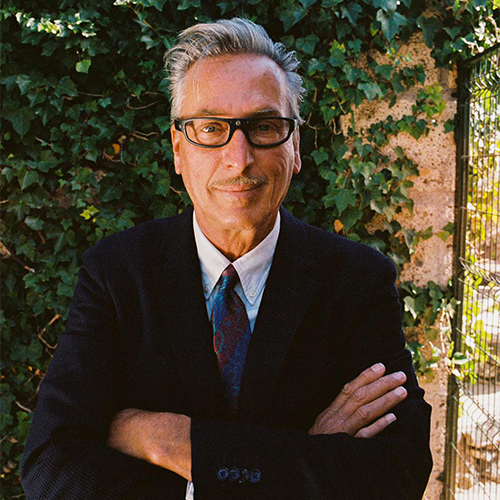
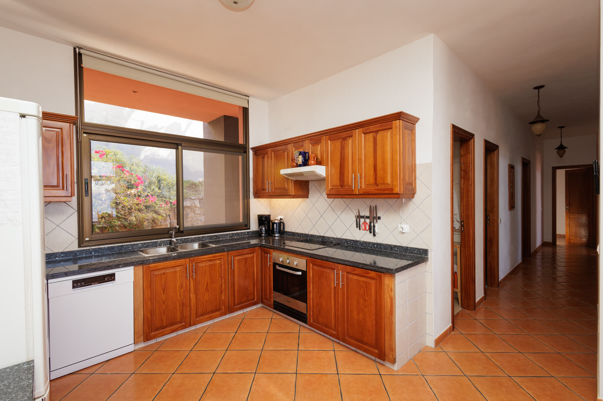
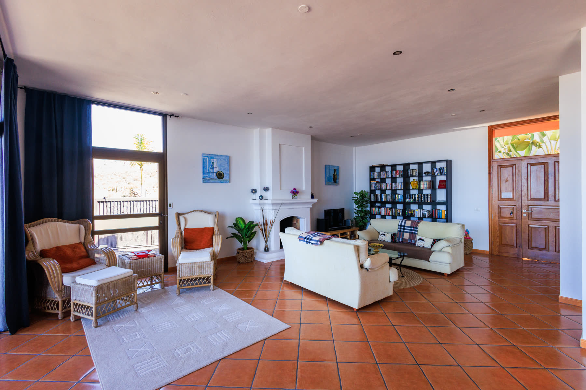
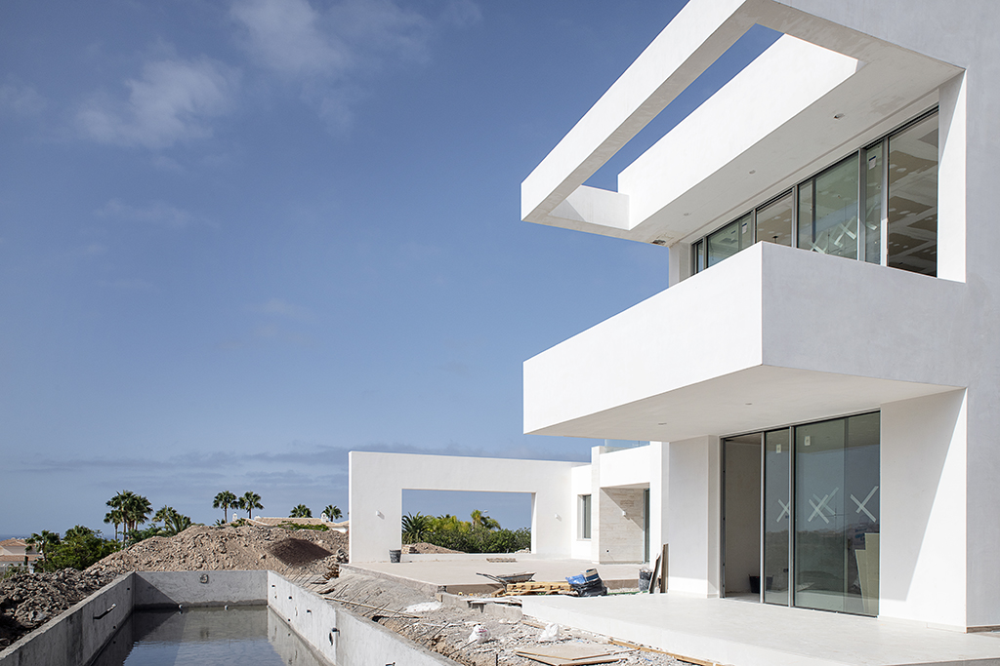
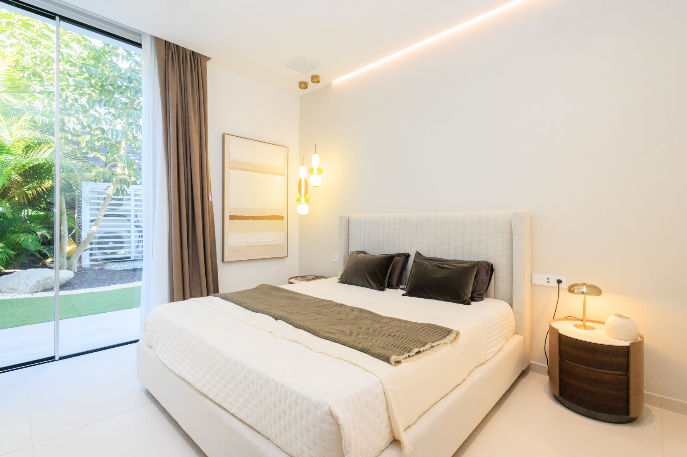
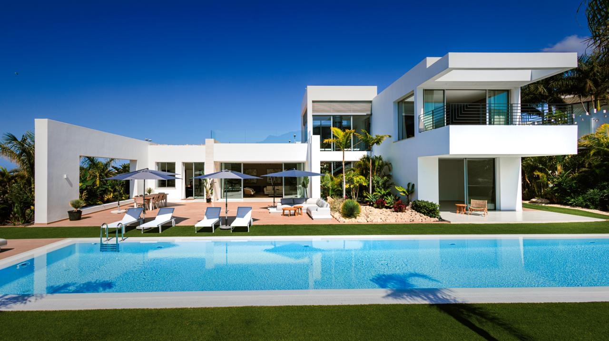
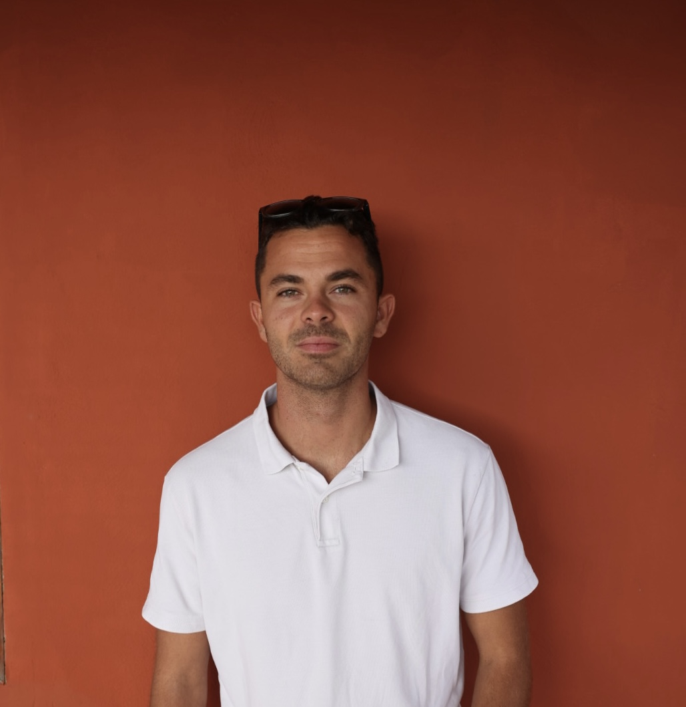
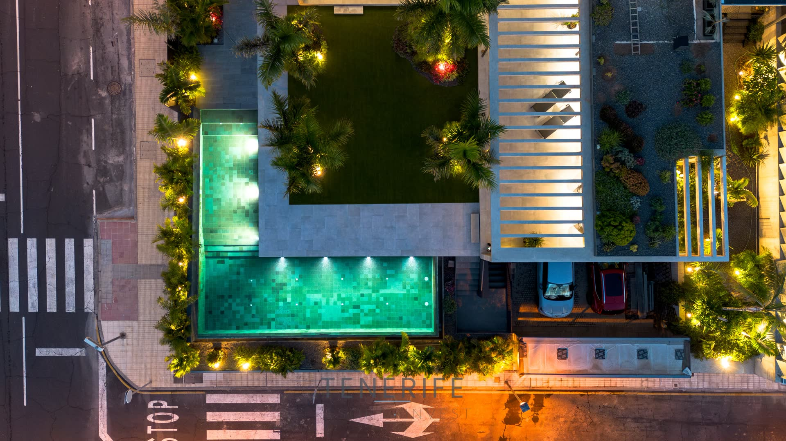

Completed · La Caleta Finalizada · La Caleta
Villa Arizona
A desert house on a volcanic island. Una casa del desierto en una isla volcánica.
See the villa → Ver la villa →One family agency. Forty-five years. A broad portfolio — from first apartments to flagship villas — curated, not dumped. Una agencia familiar. Cuarenta y cinco años. Una cartera amplia — desde pisos de entrada hasta villas emblemáticas — seleccionada, no volcada.
Scroll ↓ Siga ↓One family agency. Forty-five years. A broad portfolio — from first apartments to flagship villas — curated, not dumped. Una agencia familiar. Cuarenta y cinco años. Una cartera amplia — desde pisos de entrada hasta villas emblemáticas — seleccionada, no volcada.
Los Cristianos, Arona Los Cristianos, Arona
Los Cristianos, Arona Los Cristianos, Arona
San Eugenio Alto, Costa Adeje San Eugenio Alto, Costa Adeje
Flagship projects Proyectos emblemáticos
Select projects where Tenerife Resort Invest has taken an active role — from land acquisition through architectural direction to completion. Proyectos seleccionados en los que Tenerife Resort Invest ha tenido un papel activo, desde la adquisición del terreno hasta la dirección arquitectónica y la finalización.
Completed · La Caleta Finalizada · La Caleta
A desert house on a volcanic island. Una casa del desierto en una isla volcánica.
See the villa → Ver la villa →In progress · Playa Paraíso En desarrollo · Playa Paraíso
A sanctuary at the edge of the Atlantic. Un refugio al borde del Atlántico.
See Villa Bali → Ver Villa Bali →Stazio Machristi came to South Tenerife in 1981 from Philadelphia, after years at NASA and Lockheed Martin. Forty-five years later his son works alongside him.Stazio Machristi llegó al sur de Tenerife en 1981 desde Filadelfia, tras años en la NASA y Lockheed Martin. Cuarenta y cinco años después, su hijo trabaja a su lado.
Two generations. One way of working.Dos generaciones. Una forma de trabajar.
Read the full story →Leer la historia completa →How we got hereCómo llegamos aquí
Tap a year to open it.Toque un año para abrirlo.
Stazio was born in Philadelphia. He spent years at NASA and at Lockheed Martin before he ever saw South Tenerife. The discipline of those places never left how he thinks about a house.Stazio nació en Filadelfia. Pasó años en la NASA y en Lockheed Martin antes de conocer el sur de Tenerife. La disciplina de aquellos lugares no se le ha ido nunca de cómo piensa una casa.
Stazio arrives in South Tenerife in his early twenties. Not on holiday. Not on assignment. To build a life. He chooses a hillside, learns the local light, and registers Tenerife Resort Invest.Stazio llega al sur de Tenerife con poco más de veinte años. No de vacaciones. No en una asignación. A construir una vida. Elige una ladera, aprende la luz local y registra Tenerife Resort Invest.
American. Realtor. Developer.Americano. Agente. Promotor.

A Canarian finca in the rural south. A four-year build. Stazio handles acquisition, architectural direction, and site supervision. Clay floors, wide terraces, panoramic views.Una finca canaria en el sur rural. Cuatro años de obra. Stazio se encarga de la adquisición, la dirección arquitectónica y el seguimiento en obra.

Three years and change. The house hands over finished — his first signature development.Tres años y pico. La casa se entrega terminada — su primera promoción emblemática.

Martin Hounsell signs the arras. Proof the agency could acquire, build, and sell — not just broker.Martin Hounsell firma las arras. Prueba de que la agencia podía adquirir, construir y vender, no sólo intermediar.

The first of two villas Stazio developed on Avenida de la Macaronesia. Acquired, built, handed over, sold.La primera de dos villas que Stazio promovió en la Avenida de la Macaronesia.
Adjacent plot. Four years after the first. TRI had developed and sold four houses from the ground up.Parcela adyacente. Cuatro años después. TRI había construido y vendido ya cuatro casas desde cero.
La Caleta hillside plot. Five en-suite bedrooms, infinity pool the length of the south-facing garden.Parcela en la ladera de La Caleta. Cinco dormitorios en suite, piscina infinita.

Structure up, roof on, pool dug out. Stazio on site weekly.Estructura levantada, cubierta puesta, piscina excavada. Stazio en obra cada semana.

550 m² built, 2,500 m² plot, 6-car garage, interior courtyard with a single olive tree. TRI holds a 40% equity stake.550 m² construidos, 2.500 m² de parcela, garaje para 6 coches. TRI mantiene un 40% del capital.

Tino leaves Younited in Paris and joins full-time. New photography, new brand system, AI-assisted listings, four-language coverage.Tino deja Younited en París y se incorpora a tiempo completo. Nueva fotografía, nuevo sistema de marca.

Villa Bali in construction, Playa Paraíso. Two generations. One way of working.Villa Bali en construcción, Playa Paraíso. Dos generaciones. Una forma de trabajar.

No call centre, no auto-responder. Stazio answers his own phone.Sin centro de llamadas, sin respuestas automáticas. Stazio contesta su propio teléfono.